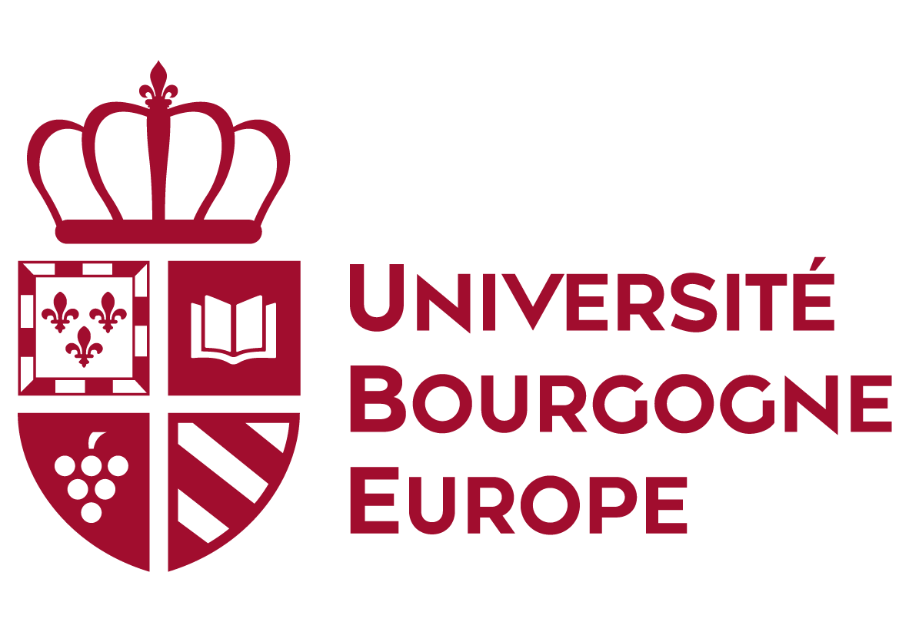

Kuassi Pierre DOVODJI
Institut de Mathématiques de Bourgogne (UMR 5584 CNRS)
Université Bourgogne Europe
📍 9 avenue Alain Savary, 21000 Dijon, France
📧 dovodjipierre@gmail.com
🔗 LinkedIn
🔗 GitHub.
I am currently a PhD student in Applied Mathematics at the University of Burgundy Europe, under the supervision of Prof. Hervé Cardot (IMB) and Dr. David Nerini (MIO). I hold two master’s degrees: one in Statistical Modeling from Université Marie et Louis Pasteur, France and another in Mathematical Engineering from Université Bretagne Sud, France.
My research focuses on developing new statistical models, particularly oriented towards oceanography. I have experience in statistical analysis, machine learning, and mathematical modeling, and I am passionate about applying these methods to environmental data.